This project investigates the application of probabilistic sequence modeling using large language models (LLMs) to simulate the behavior of one dimensional elementary cellular automata (ECA). We trained an autoregressive Transformer on sequences representing cellular states across time, aiming to predict the evolution of automaton patterns given specific rules. Despite the model’s capacity to capture local structures and short term dependencies, our results suggest that LLMs struggle to fully learn or generalize the underlying deterministic rules governing ECA behavior. This highlights limitations in using standard sequence models for tasks that require precise algorithmic reasoning, pointing to the need for more specialized architectures or training strategies in such settings.
Example ECA simulation ground-truths and model predictions.
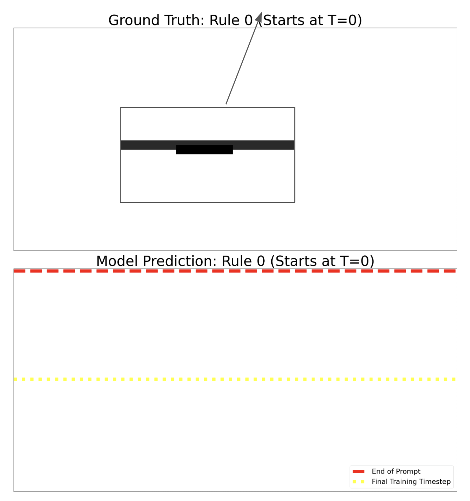 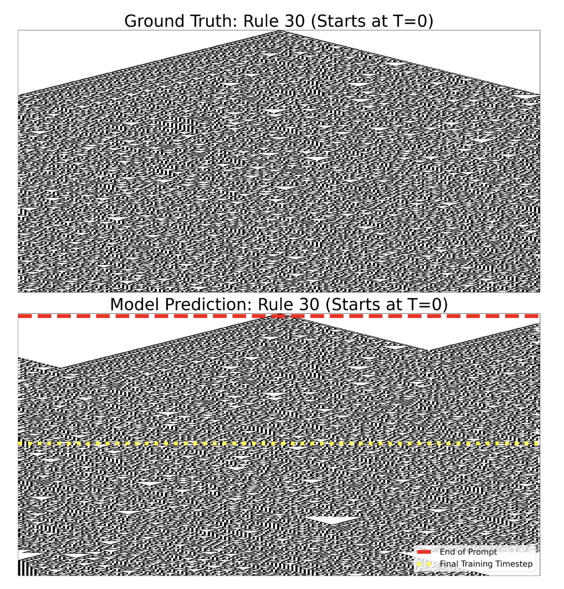 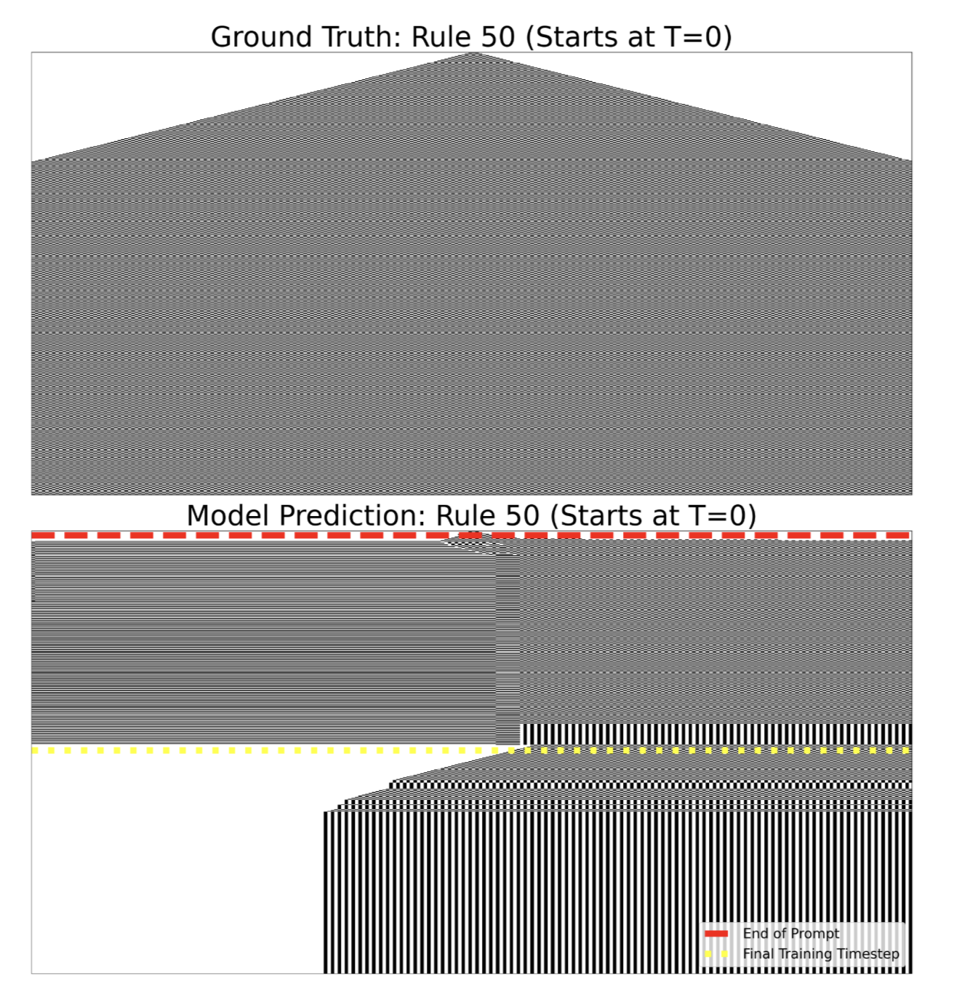 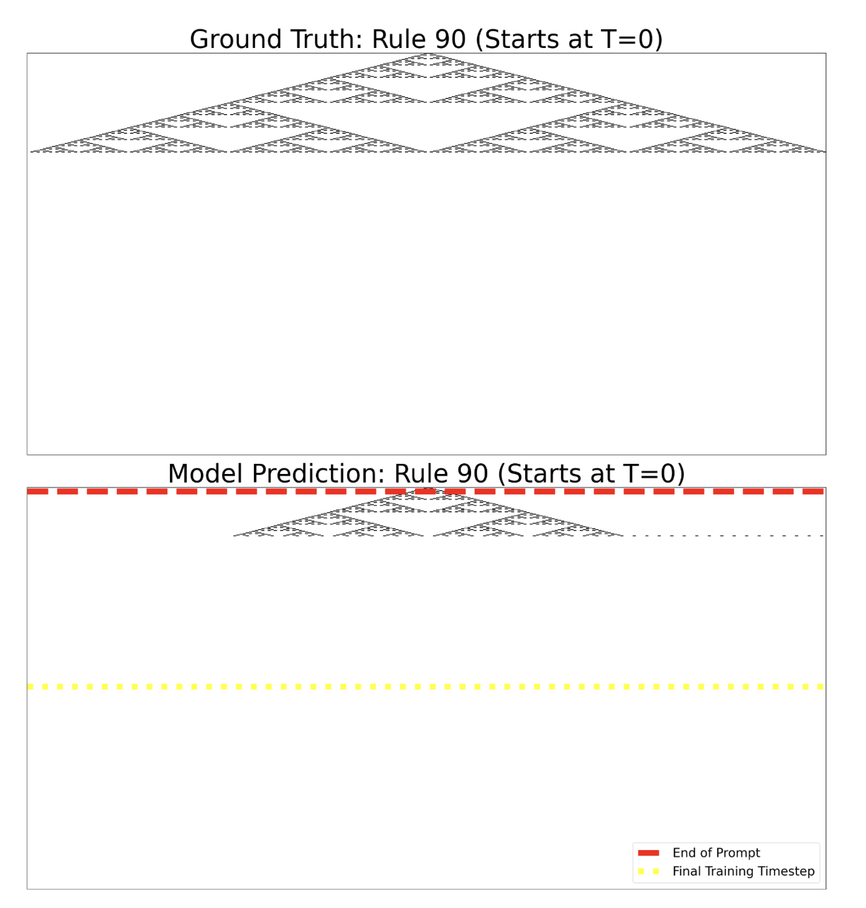 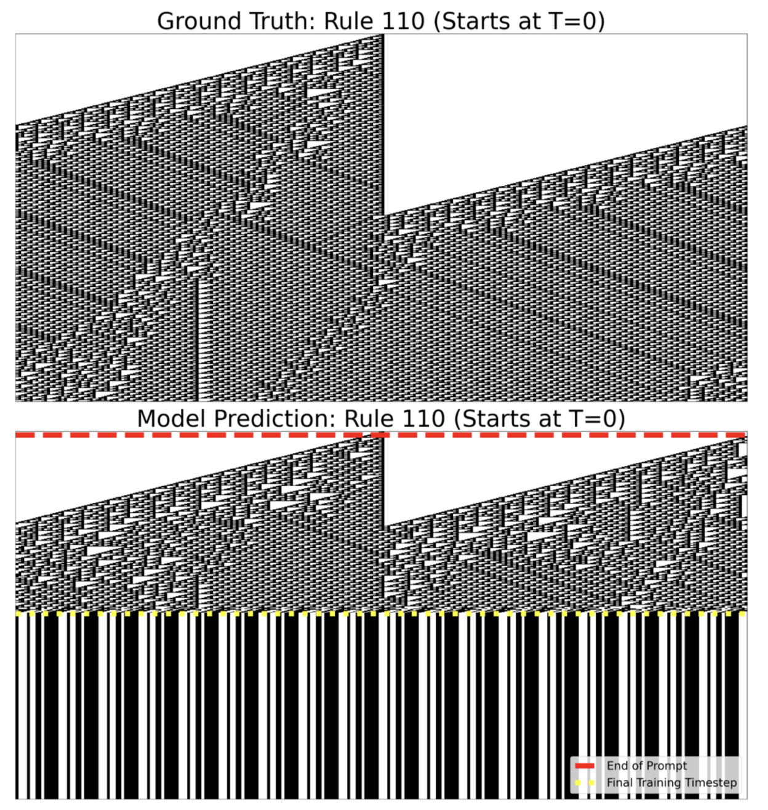Quantitative results
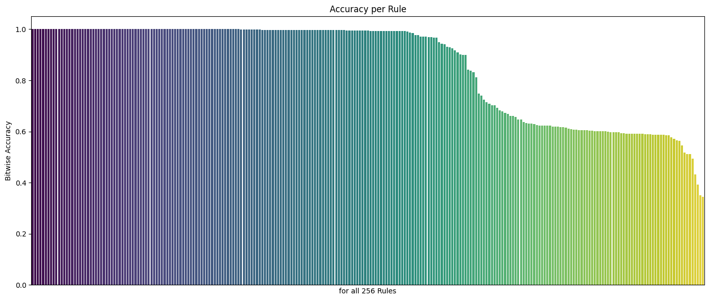 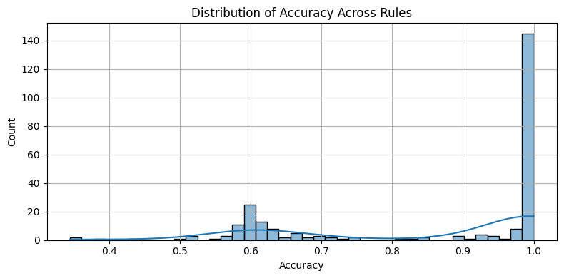 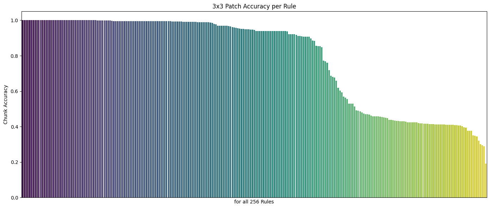 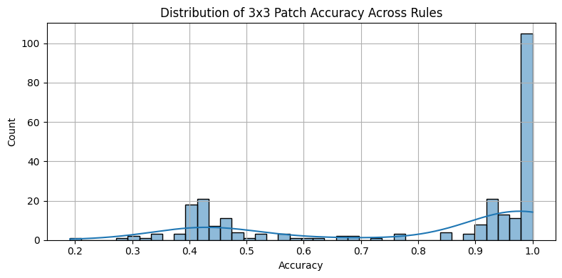 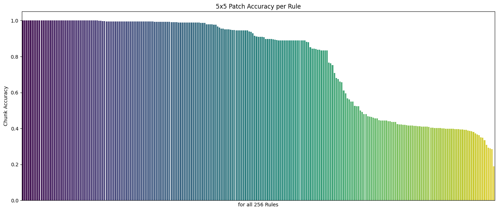 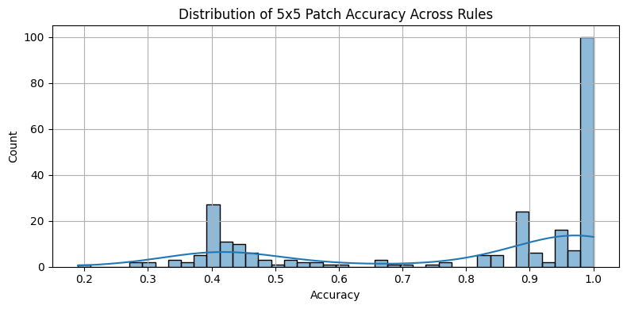 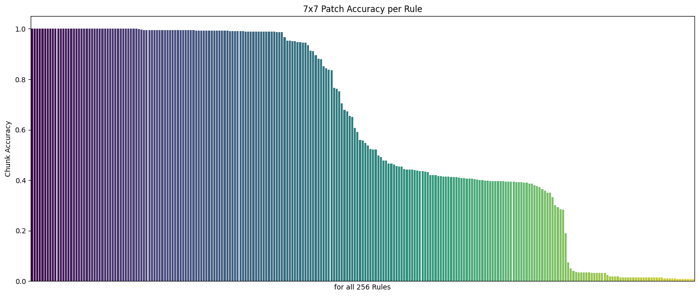 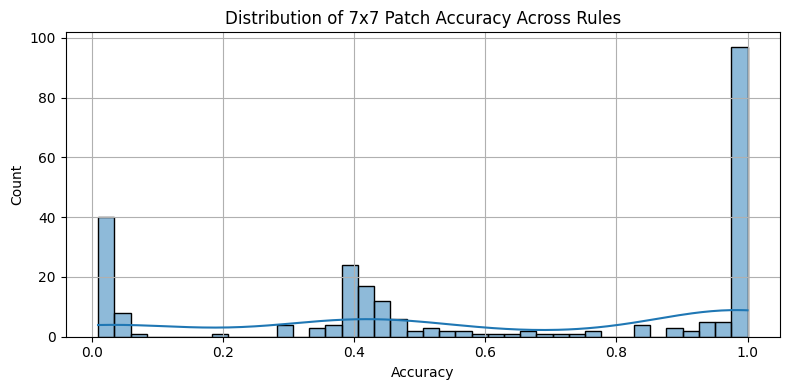 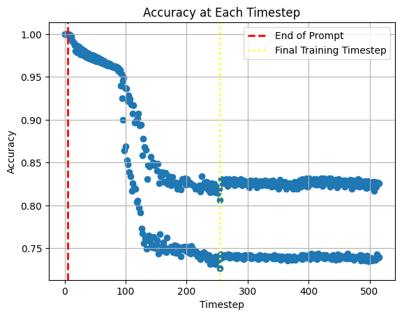